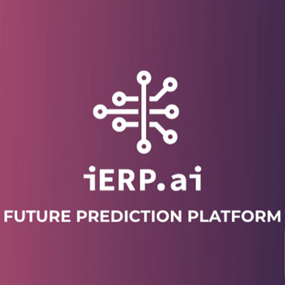

Monitor precision of AI algorithms over time
The business prediction platform was the final project of the web development Bootcamp that I did at the Wild Code School. It was created in collaboration with a real client, the company iERP, which is part of the Wild Code School's partner programme, among other companies.
My team and I were very fortunate to be able to finish our studies by working for 3 months on a real project. We also had the luck to have as a tech lead Luis Parra, who couched us during all the process, and also we had the help from Branislav Osif, senior front end of the company.
iERP was founded in April 2019 in Bratislava, Slovakia by two co-founders: Josef Balaz and Dusan Korcak.
Provide end-to-end Business Prediction Platform to internal users with modules that address multiple business scenarios with ZERO required knowledge of artificial intelligence or machine learning technologies.
I was part of the front end team. We used ReactJS and Typescript together with Ant Design to build the user interface. We also used GraphQL with Apollo Client to query the data from the backend, which is displayed on the graphs in the front end.
Notes: When we started the project, Ant Design, Typescript and GraphQL were new technologies to us, as they were not part of the bootcamp programme, but we managed to implement them on the go. At the beginning was challenging having to learn all these new technologies in such a short time, but in the other hand it was very enriching to be able to acquire new skills and knowledge.
The backend team built a REST API where the user is able to login, register with JWT authentication and encryption with Crypto Library.
The project has also a PostgreSQL Database and a GraphQL API to ensure targeting specific data that the user wants to pull and display in the dashboard and limit the request of data.
The github repository is private and also the platform is just available for internal users. However, I share the video of the demo day, when we presented the final project in front of the audience. Click here to see the demo day presentation.